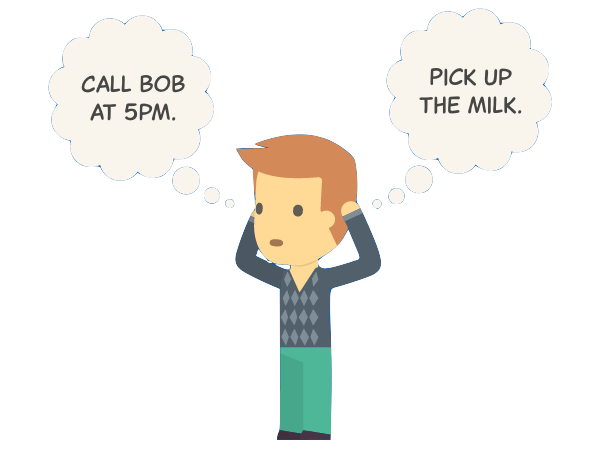

<navbar></navbar>

<section class="home-container">
  <main class="home-main">
    <header>Keep your life in sync</header>

    

      <figcaption class="caption">
        Get the to-dos out of your head
      </figcaption>

      <div class="caption-desc">
        Stop thinking about your to-dos, <br>
        and let the app remember them for you
      </div>
  </main>

</section>
